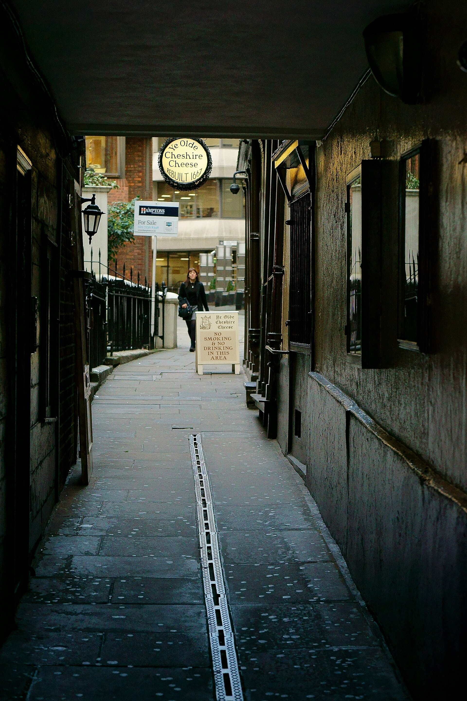

01 · Fleet Street
Ye Olde Cheshire Cheese
Down a narrow court off Fleet Street, this Samuel Smith’s house was rebuilt after the Great Fire—its sign still reads “Rebuilt 1667”—and is a warren of panelled rooms once loved by literary regulars from Dr Johnson’s circle to Dickens.
Tip: Enter via Wine Office Court (145 Fleet Street). Midweek mid-afternoon is calmer than lunch or after-work peaks. Note: no wheelchair access.
Photo: Peter Trimming, CC BY-SA 2.0, via Wikimedia Commons
Sources: ye-olde-cheshire-cheese.co.uk · visitlondon.com · camra.org.uk
Find a stay near Ye Olde Cheshire Cheese →